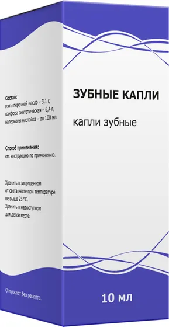

Капли и спреи
Зубные капли
Капли зубные 10мл
- Группа
- Капли и спреи
- Форма выпуска
- Капли зубные 10мл
- Производитель
- ООО «Тульская фармацевтическая фабрика», Россия
Информация носит справочный характер. Перед применением прочитайте инструкцию и проконсультируйтесь со специалистом.
Инструкция по применению
01Фармакотерапевтическая группа
Местнораздражающее средство.
02Состав
Мяты перечной масло - 3,1г;
Камфора синтетическая - 6,4г;
Валерианы настойка - до 100мл.
03Показания к применению
Зубная боль (до оказания стоматологической врачебной помощи).
04Способы применения
Местно. Ватный тампон, смоченный 2-3 каплями препарата, прикладывают к больному зубу на 5-10 минут.
Если после лечения улучшения не наступает или симптомы усугубляются, или появляются новые симптомы, необходимо проконсультироваться с врачом. Применяйте препарат только согласно тем показаниям, тому способу применения и в тех дозах, которые указаны в инструкции.